(2025) Lecture 2
Presenter: Unknown
Note Taker: Unknown
1 The Hadron Zoo and the Search for Order
Welcome everyone to today’s lecture. It will be mostly about classification of hadrons. I will walk you through the history of how important discoveries were made, what we learned about hadrons, and how we can group them together.
In the 1950s and 1960s, many new large accelerators were built, such as the Bevatron. It came into operation in 1954. The Bevatron was a proton accelerator with energies up to 13 GeV. These high‑energy protons were shot at a fixed target. Many different particles were produced and detected.
They found over 100 new particles. This was called the particle zoo. Physicists of the time had to think how to organize these particles: Is there some pattern? Are these all fundamental particles?
Consider the periodic table for example. We had all these atoms and grouped them according to their proton and neutron numbers. We knew how many electrons were in the outermost shells. This helped us group them in the periodic table. This is what we want to do now: we are looking at the hadrons.
| Periodic Table (atoms) | Hadron Classification |
|---|---|
| Grouped by proton/neutron numbers | Grouped by quantum numbers |
| Electron shells determine chemical properties | Quantum numbers determine physical properties and interactions |
| Organization revealed underlying patterns | Pattern identification aids understanding of hadrons |
Let me start. In the context of particle physics, the characteristics we choose to group hadrons are their quantum numbers. We will now discuss different quantum numbers, why they were introduced, and how they helped group certain particles.
2 Isospin: The Proton-Neutron Doublet
In 1932 Chadwick discovered the neutron. Different experiments, including those at the Bevatron, showed that:
- photon‑proton,
- proton‑neutron,
- and neutron‑neutron interactions all had nearly identical interaction strengths.
The masses of the proton and neutron are almost equal: m_p \approx m_n \approx 939\,\text{MeV} .
This similarity led to the proposal that the proton and neutron can be considered the same particle — the nucleon — existing in two different states. Those two states are described by isospin.
The strong interaction does not distinguish between the proton and the neutron. They only appear as different particles in the presence of an electromagnetic field. Otherwise they are the same, and they are placed into an isospin doublet.
This is analogous to spin: an electron can be spin‑up or spin‑down. Here, the proton and neutron correspond to the two possible isospin projections.
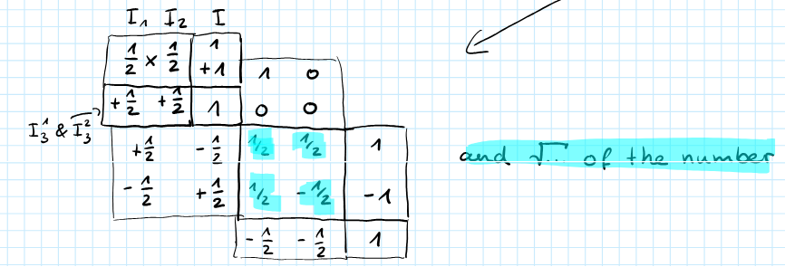
At the quark level, protons and neutrons are composed of up ( u ) and down ( d ) quarks. The strong interaction does not distinguish between these two flavors. The up and down quarks also form an isospin doublet, with the following isospin states:
u = \left|\frac{1}{2}, +\frac{1}{2}\right\rangle,\quad d = \left|\frac{1}{2}, -\frac{1}{2}\right\rangle
I_3|u\rangle = \frac{1}{2}|u\rangle,\quad I_3|d\rangle = -\frac{1}{2}|d\rangle
| Particle | Isospin doublet | I_3 eigenvalue (where given) |
|---|---|---|
| Nucleon (proton p , neutron n ) | p and n | — (not stated in this chunk) |
| Up quark u | \left|\frac12,+\frac12\right\rangle | +\frac12 |
| Down quark d | \left|\frac12,-\frac12\right\rangle | -\frac12 |
The strong interaction treats all hadrons (and their quark constituents) identically as long as only up and down flavors are involved. It cannot distinguish between these flavors.
3 Isospin and SU(2) Algebra in Particle Systems
Isospin is not a property like spin, but mathematically it can be treated the same way and follows the SU(2) algebra. The generators are the Pauli matrices \sigma_i ; we use the isospin operator \mathbf{I} instead of \mathbf{J} .
States are written as |I, I_3\rangle :
u = |\tfrac12,+\tfrac12\rangle,\qquad d = |\tfrac12,-\tfrac12\rangle
I_3|u\rangle = \tfrac12|u\rangle,\qquad I_3|d\rangle = -\tfrac12|d\rangle
The commutation relations are [I_i,I_j]=i\epsilon_{ijk}I_k , and the raising/lowering operators are I_\pm = I_1\pm iI_2 . For a given isospin I , the third component I_3 takes values I, I-1, \dots, -I , giving 2I+1 projections.
3.0.1 Combining a quark and an antiquark
A meson consists of a quark and an antiquark. For up and down quarks, each has I=\frac12 , so combining them uses the same Clebsch–Gordan coefficients as spin- 1/2 addition: (see Figure 1)
\tfrac12\otimes\tfrac12 = 1\oplus0 ,\qquad (2\otimes2=3\oplus1)
The resulting states are a triplet ( I=1 ) and a singlet ( I=0 ). In matrix terms, you have a 4\times4 matrix that decomposes into a 3\times3 and a 1\times1 block. The explicit states are:
| |I,I_3\rangle | Quark content |
|---|---|
| |1,1\rangle | -|u\bar{d}\rangle |
| |1,0\rangle | \frac{1}{\sqrt{2}}\bigl(|u\bar{u}\rangle - |d\bar{d}\rangle\bigr) |
| |1,-1\rangle | |d\bar{u}\rangle |
| |0,0\rangle | \frac{1}{\sqrt{2}}\bigl(|u\bar{u}\rangle + |d\bar{d}\rangle\bigr) |
The antiquarks are assigned I_3 = -\tfrac12 for \bar{u} and I_3 = +\tfrac12 for \bar{d} , so that they transform under SU(2) in the same way as quarks. This sign convention leads to the minus sign in the I=1, I_3=0 state and the plus sign in the singlet.
These states correspond to particles:
- The triplet states are the pions: \pi^+, \pi^0, \pi^- .
- The \rho mesons have the same isospin but differ in spin: pions have antiparallel spins (spin 0 ), \rho mesons have parallel spins (spin 1 ).
- The singlet state |0,0\rangle can be associated with \omega and \eta' mesons.
3.0.2 Combining a meson (I=1) with a nucleon (I=1/2)
Consider a pion beam on a proton target: pion has I=1 , nucleon has I=\frac12 . The combination gives:
1\otimes\tfrac12 = \tfrac32\oplus\tfrac12,\qquad (3\otimes2=4\oplus2)
In matrix terms, this corresponds to a 6\times6 matrix that decomposes into a 4\times4 block and a 2\times2 block — irreducible representations. For small numbers it is easy, but for larger ones there are systematic methods; we won’t go into that. The resulting isospin multiplets are:
- I = \frac32 (quartet): four projections I_3 = +\frac32,+\frac12,-\frac12,-\frac32 . These correspond to the \Delta baryons: \Delta^{++}, \Delta^{+}, \Delta^{0}, \Delta^{-} with mass m_\Delta = 1232 MeV.
- I = \frac12 (doublet): two projections, corresponding to nucleons p and n .
3.0.3 Combining three quarks to form baryons
Baryons are made of three quarks, each with I=\frac12 . The combination of three isospin- 1/2 particles proceeds step by step:
2\otimes2\otimes2 = (2\otimes2)\otimes2 = (3\oplus1)\otimes2 = (3\otimes2) \oplus (1\otimes2) = 4 \oplus 2 \oplus 2
Thus we obtain:
- One I=\frac32 quartet (the \Delta baryons)
- Two distinct I=\frac12 doublets (the nucleon doublet and a second doublet, e.g., the \Lambda or \Sigma etc., depending on additional quantum numbers)
4 Isospin and Cross Section Ratios
4.0.1 Isospin and Cross Section Ratios
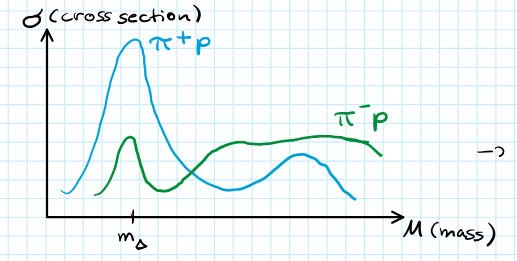
Consider the mass plotted against the cross section. In the \Delta mass region, the measured cross section ratio is:
\sigma_{\pi^+ p} : \sigma_{\pi^- p} \approx 3 : 1
The isospin quantum number explains why the cross sections differ. This will be derived in the exercises and classwork.
4.0.2 Historical Origin of Isospin
Isospin was introduced in the 1950s, before quarks were known. Physicists observed patterns among newly discovered particles — first pions, later \rho mesons — and looked for symmetries to group them mathematically.
4.1 Isospin Multiplets
| Particle family | Isospin I | I_3 values | Members |
|---|---|---|---|
| \pi mesons | 1 | +1, 0, -1 | \pi^+, \pi^0, \pi^- |
| \rho mesons | 1 | +1, 0, -1 | \rho^+, \rho^0, \rho^- |
| \Delta baryons | 3/2 | +3/2, +1/2, -1/2, -3/2 | \Delta^{++}, \Delta^+, \Delta^0, \Delta^- |
The quark content of the pions is:
|1,1\rangle = -|u\bar{d}\rangle \rightarrow \pi^+, \qquad |1,0\rangle = \frac{1}{\sqrt{2}}(|u\bar{u}\rangle - |d\bar{d}\rangle) \rightarrow \pi^0, \qquad |1,-1\rangle = |d\bar{u}\rangle \rightarrow \pi^-
The \Delta baryons fill an isospin quadruplet with I=3/2 and I_3 ranging from +3/2 (for \Delta^{++} ) to -3/2 (for \Delta^- ).
Later, larger patterns were seen, and that is where this lecture is headed. Next we will look at strangeness, hypercharge, and so on.
4.1.1 Nucleons and Strong Interaction Symmetry
Why introduce isospin for protons and neutrons? If you look just at protons and neutrons, you might think about spin and charge, so why introduce isospin? But consider reactions like proton–proton, proton–neutron, and neutron–neutron. When you look at cross sections, you see that certain reactions are stronger, yet here they were quite similar. The reaction rates for these scatterings are nearly the same. This indicates that the strong interaction does not distinguish between protons and neutrons.
The proton and neutron are thus placed in an isospin doublet:
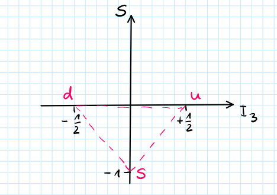
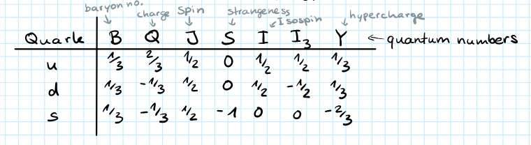
\begin{pmatrix} p \\ n \end{pmatrix}, \qquad I = \frac{1}{2}, \quad I_3 = +\frac{1}{2} \text{ (proton)},\; -\frac{1}{2} \text{ (neutron)}
At the quark level, this symmetry means the strong interaction does not care about up and down quarks. Hence the up and down quarks also form an isospin doublet. (The quark model was developed later.)
Isospin was originally a purely mathematical grouping; the connection to quarks came afterwards.
5 Strangeness, Isospin, and the Eightfold Way
5.1 Historical Context
Physicists initially identified an isospin doublet. Later they discovered pions, rhos, and other particles. They grouped these particles together, looking for larger patterns and introducing strangeness as a new quantum number. The Delta resonance was first found around the 1960s. (see Figure 2)
With the Bevatron experiment — one of the first bubble‑chamber experiments — large accelerators became accessible. Over 100 particles were discovered, and physicists did not know what to do with them. They asked: Are they like atoms? Later they found that the particles could be decomposed into smaller constituents, a process still being studied.
5.2 Strangeness
Some detected particles behaved strangely. In cosmic‑ray experiments, pions hitting a copper target produced a characteristic V‑shaped track in a cloud chamber, consisting of two pions, a proton, and another pion. These particles always appeared in pairs and had an unusually long lifetime. (see Figure 3)
A new quantum number, strangeness S , was introduced. Strangeness is conserved in strong and electromagnetic interactions but not in weak interactions. Isospin is also conserved in strong interactions (a point mentioned earlier).
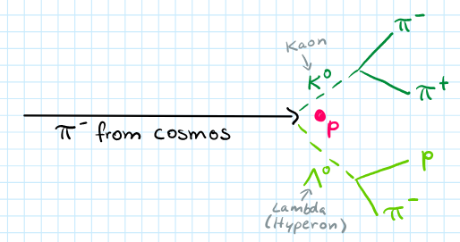
5.2.1 Assigning Strangeness
| Particle species | Quark content | Strangeness S |
|---|---|---|
| Pions, neutron, proton | u , d only | 0 |
| Lambda ( \Lambda ) | contains s quark | -1 |
| Kaons ( K ) | contain s or \bar{s} | +1 or -1 |
Particles containing a strange quark are called hyperons. Types include the \Lambda , \Sigma , \Xi (cascade), and K mesons. (see Figure 4)
The kaons form two isospin doublets:
- K^+ and K^0 with S = +1
- K^- and \bar{K}^0 with S = -1
Since strangeness always appears in pairs in strong production, it must be conserved (but not in weak decays). For example, \Lambda \to p + \pi^- : both final particles have S=0 , yet the decay occurs — it is a weak decay. The long lifetime signals weakness. In contrast, strong production: \pi^- p \to \pi^- p K_1 \Lambda conserves strangeness.
5.2.2 Hypercharge
Hypercharge Y is defined as:
Y = B + S
where B is baryon number: +1 for baryons, -1 for antibaryons, 0 for mesons.
5.2.3 Baryon Number Conservation
In a reaction like \pi^- on a proton target, the final state cannot contain only mesons — a baryon must appear. Thus baryon number is conserved.
5.2.4 Gell‑Mann–Nishijima Formula
From isospin, we have the pion triplet with I_3 = +1, 0, -1 corresponding to charges \pi^+, \pi^0, \pi^- . The relation between isospin and charge is:
Q = I_3 + \frac{Y}{2}
Check for the proton: I_3 = +1/2 , Y = 1 ( B=1, S=0 ) → Q = 1/2 + 1/2 = 1 . For the neutron: I_3 = -1/2 , Y = 1 → Q = -1/2 + 1/2 = 0 .
5.3 The Eightfold Way
Using strangeness (hypercharge) together with isospin, Murray Gell‑Mann and Yuval Ne’eman discovered a larger pattern: particles could be arranged into multiplets within SU(3)_{\text{flavor}} . At the time quarks were unknown, but we now understand the pattern in terms of quarks.
5.3.1 Quark Quantum Numbers (Ground State)
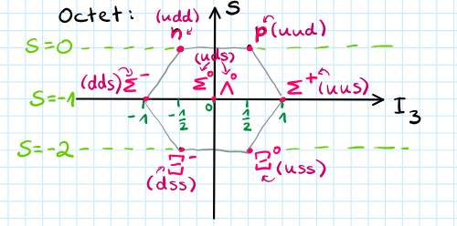
| Quark | Charge Q | Baryon Number B | Strangeness S | Spin |
|---|---|---|---|---|
| u | +2/3 | 1/3 | 0 | 1/2 |
| d | -1/3 | 1/3 | 0 | 1/2 |
| s | -1/3 | 1/3 | -1 | 1/2 |
5.3.2 Baryon Composition
Baryons are made of three quarks ( u , d , or s ). The decomposition of the tensor product is:
3 \otimes 3 \otimes 3 = 10 \oplus 8 \oplus 8 \oplus 1
This gives an octet and a decuplet for the ground‑state baryons. Plotting I_3 (x‑axis) against strangeness S (or hypercharge Y ) yields the patterns.
Baryon Octet ( J^P = 1/2^+ ):
| Particle | Quark Content | I_3 | S | Q |
|---|---|---|---|---|
| n | udd | -1/2 | 0 | 0 |
| p | uud | +1/2 | 0 | +1 |
| \Sigma^- | dds | -1 | -1 | -1 |
| \Sigma^0 | uds | 0 | -1 | 0 |
| \Sigma^+ | uus | +1 | -1 | +1 |
| \Xi^- | dss | -1/2 | -2 | -1 |
| \Xi^0 | uss | +1/2 | -2 | 0 |
Baryon Decuplet ( J^P = 3/2^+ ):
| Particle | I_3 | S | Q | Quark Content (all possible) |
|---|---|---|---|---|
| \Delta^- | -3/2 | 0 | -1 | ddd |
| \Delta^0 | -1/2 | 0 | 0 | udd |
| \Delta^+ | +1/2 | 0 | +1 | uud |
| \Delta^{++} | +3/2 | 0 | +2 | uuu |
| \Sigma^{*-} | -1 | -1 | -1 | dds etc. |
| \Sigma^{*0} | 0 | -1 | 0 | uds |
| \Sigma^{*+} | +1 | -1 | +1 | uus |
| \Xi^{*-} | -1/2 | -2 | -1 | dss |
| \Xi^{*0} | +1/2 | -2 | 0 | uss |
| \Omega^- | 0 | -3 | -1 | sss |
The mass difference between strange and non‑strange quarks is \Delta m \approx 150\ \text{MeV} ( m_u = m_d \neq m_s ). This leads to the mass splittings within the multiplets.
6 Isospin Symmetry and Baryon Mass Patterns
The masses of baryons reveal patterns of symmetry breaking. Small mass differences occur along the horizontal axis (isospin multiplets), while larger differences appear along the vertical axis (changing strangeness).
| Direction | Example mass differences | Size |
|---|---|---|
| Horizontal (isospin) | m_n-m_p=1.3\ \text{MeV} m_{\Sigma^-}-m_{\Sigma^0}=7\ \text{MeV} |
Small |
| Vertical (strangeness) | m_\Xi-m_N=250\ \text{MeV} m_{\Xi^-}-m_{\Sigma^-}=130\ \text{MeV} |
Large |
A similar small difference holds for the kaons. (see Figure 3) (see Figure 6)
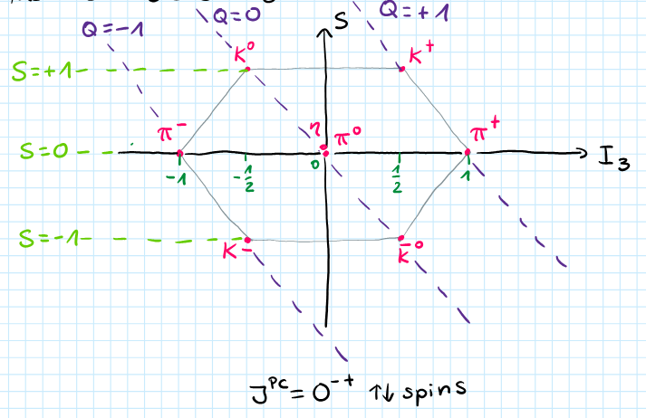
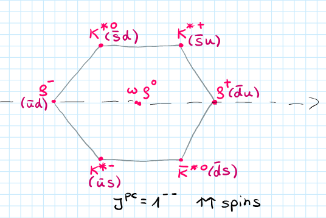
These numbers tell us that isospin symmetry ( SU(2) ) is a good symmetry, but including the strange quark makes it only approximate—otherwise all masses would be equal.
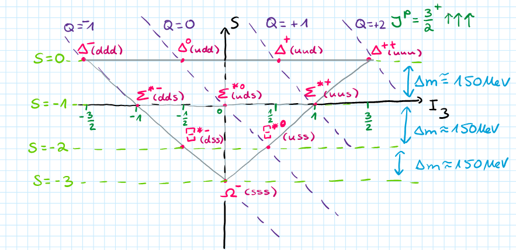
The third component of isospin, I_3 , and strangeness S label the particles. In the baryon octet and decuplet, I_3 runs along the horizontal axis and S along the vertical axis, taking values 0 , -1 , -2 , -3 . Each isospin multiplet has a characteristic I_3 pattern:
- Nucleon doublet: I_3 = \pm\frac12
- \Sigma triplet: I_3 = -1, 0, +1
- \Xi doublet: I_3 = \pm\frac12
- \Lambda singlet: I_3 = 0
All baryons in the octet share spin–parity J^P = \tfrac12^+ , while those in the decuplet have J^P = \tfrac32^+ . For the octet, the spins of the three quarks can be arranged in various permutations to give total J=\frac12 ; for the decuplet, all three spins are aligned, giving J=\frac32 .
7 Gell-Mann’s Prediction of the Omega Minus
When Gell-Mann discovered the pattern (the eightfold way), the Ω⁻ baryon had not yet been observed. (see Figure 6) Predicting its existence was a major success for Gell-Mann, and the particle was found two years later.
The discovery was made in a bubble‑chamber experiment via the reaction K^- p \to \Omega^- + K^+ + K^0
— strangeness conservation requires the two additional kaons.
The Ω⁻ then decays through the chain \Omega^- \to \Xi^0 \pi^- \to \Lambda^0 \pi^0 \to p \pi^- \gamma \gamma.
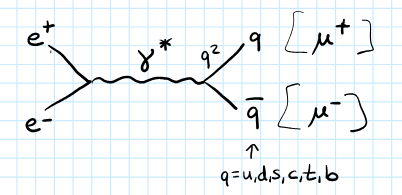
Beyond predicting the particle’s existence, Gell‑Mann also estimated its mass roughly. The masses within the decuplet (the “horizontal lines” of the pattern) are: (see Figure 2) (see Figure 9)
| Particle | Approximate mass |
|---|---|
| Δ (Delta) | 1232 MeV |
| Σ (Sigma) | — |
| Ω (Omega) | ≈ 5680 MeV |
The spacing between these levels is roughly constant: \Delta m \approx 150 MeV.
These group‑theoretic considerations allowed physicists to describe many particles symmetrically. The mass difference between the octet and the decuplet arises because their spins differ; the shift can be attributed to a spin‑spin or spin‑orbit interaction, i.e., it originates from the dynamics. (see Figure 7) (see Figure 8)
8 From Patterns to Quarks: Symmetries, Color, and the Pauli Principle
8.1 Evidence for Three Colors from e^+e^- Annihilation (see Figure 5) (see Figure 8) (see Figure 10)
The process produces a virtual photon that can decay into quark–antiquark pairs or into lepton pairs like \mu^+\mu^- . The ratio
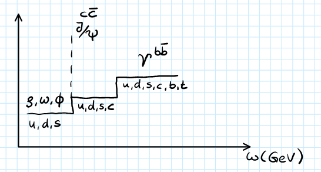
R = \frac{\sigma_{\text{had}}}{\sigma_{\mu^+\mu^-}} \propto N_{\text{color}} \sum q_i^2
is proportional to the number of colors. At energies where only u , d , s quarks are accessible, the ratio gives N_{\text{color}}=3 . When charm and bottom thresholds are crossed, the ratio jumps by precise amounts consistent with three colors.